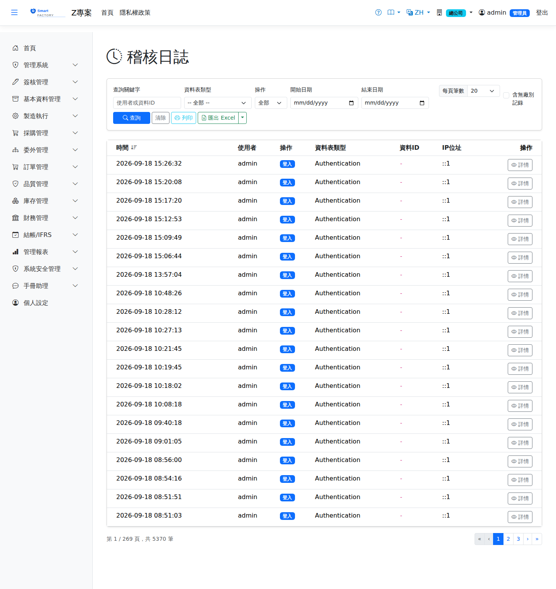

稽核日誌Audit Log
選單位置：管理系統 → 稽核紀錄 | 權限：依權限設定（唯讀畫面）Menu: System Administration → Audit Log | Permission: per permission settings (read-only screen)
稽核日誌記錄系統中的資料異動：The audit log records data changes in the system: 誰、在什麼時候、對哪一筆資料、做了什麼who did what, to which record, and when，以及來源 IP。本畫面, together with the source IP address. This screen is 唯讀read-only：紀錄由系統自動寫入，任何人都不能在此新增、修改或刪除。: entries are written automatically by the system and nobody can add, change or delete them here.

稽核日誌畫面截圖（示意，實際欄位/資料依權限與查詢條件而異）Audit log screenshot (illustrative; actual fields and data vary by permission and query criteria)
查詢條件Search criteria
| 條件Criterion | 說明Guide |
|---|---|
| 關鍵字Keyword | 同時比對Matched against both the 使用者名稱user name與 and the 資料IDentity ID。想查某張單據的異動史，把單號貼進來即可。. To see the history of one document, paste its number here. |
| 資料表類型Entity Type | 下拉選單，列出目前資料中A drop-down listing the entity types that 實際出現過actually occur的類型（例如 Mobile.Permission）。沒發生過的類型不會出現在清單裡。 in the data (for example Mobile.Permission). A type that has never occurred is not offered. |
| 操作Action | 依動作類型篩選（如新增、修改、刪除）。Filters by the kind of change (create, update, delete and so on). |
| 開始日期／結束日期Start Date / End Date | 依異動時間篩選，Filters by the time of the change; 含當日整天the whole of both days is included（迄日當天的紀錄會被納入）。日期以 (entries on the end date itself are covered). Days are counted in 您的時區your own time zone為準，與「時間」欄顯示的一致：清晨 0～8 點的異動算在當天，不會漏掉。, matching what the Timestamp column shows: a change made in the early hours belongs to that day and is not missed. |
| 含無廠別記錄Include unplanted records | 預設只看By default you see only entries for the 目前所在廠plant you are currently in的紀錄。勾選後，額外納入不屬於任何廠的紀錄——使用者、角色、權限這類全公司共用的設定改動就屬於這一類。. Tick it to additionally include entries that belong to no plant: changes to company-wide settings such as users, roles and permissions fall into this group. |
查不到權限或使用者的異動？先勾「含無廠別記錄」：Cannot find a change to a user or a permission? Tick "Include unplanted records" first:這類設定不隸屬任何廠，預設的廠別篩選會把它們濾掉，畫面看起來就像「沒有人動過」。2026-10-21 起，本身沒有廠別的資料（單據明細行、使用者、角色、權限、共用主檔）改記 settings like these belong to no plant, so the default plant filter hides them and the screen looks as though nobody ever touched them. From 21 October 2026, changes to records that have no plant of their own (document lines, users, roles, permissions, shared master data) are filed under 操作者當時所在的廠the plant the person making the change was in，預設就看得到；在此之前的舊紀錄仍要勾選才會出現。, so they show by default; older entries still need the box ticked.
欄位說明Field reference
| 欄位名稱Field | 說明Guide |
|---|---|
| 時間Timestamp | 異動發生的時間，已換算成您所在廠別的時區顯示（系統內部以 UTC 儲存）。預設由新到舊排序。When the change happened, converted to the time zone of your plant for display (internally it is stored in UTC). Sorted newest first by default. |
| 使用者User | 執行異動者的帳號名稱。即使該帳號日後被刪除，這裡留存的名稱仍在。The user name of whoever made the change. The name recorded here remains even if the account is later deleted. |
| 操作Action | 動作類型，例如新增、修改、刪除。The kind of change: create, update, delete and so on. |
| 資料表類型Entity Type | 被異動的資料種類。The kind of record that was changed. |
| 資料IDEntity ID | 被異動資料的識別碼，單據多半就是單號。明細行記成「單號|行號」（例：RC-2610-00001|2），用單號查詢會連同各行一起列出，也分得出改的是哪一行。The identifier of the record changed; for documents it is usually the document number. A document line is recorded as "number|line" (for example RC-2610-00001|2): searching by the document number lists its lines too, and tells you which line was changed. |
| IP 位址IP address | 發出這次異動的來源 IP。The source address the change came from. |
操作步驟Steps
追查某張單據被改過什麼Tracing what was changed on a document
1
點選左側選單「管理系統 > 稽核紀錄」。Choose "System Administration > Audit Log" in the left-hand menu.
2
關鍵字貼上單號，必要時縮小日期區間，按「查詢」。Paste the document number into the keyword box, narrow the date range if needed, and click "Search".
3
點該列右側的「詳情」開啟明細，右側面板顯示這次異動的Click "Details" at the right of the row; the panel that opens shows the 變更內容changes（哪些欄位、由什麼值改成什麼值）。 made — which fields, and from what value to what.
查某個人做了哪些事Seeing what one person did
1
關鍵字輸入該使用者的帳號，設定日期區間後查詢。Type their user name in the keyword box, set the date range and search.
2
點「時間」「操作」等欄位標題可改變排序，方便找出特定時段的密集操作。Click the "Timestamp" or "Action" headings to change the sort order, which helps to spot bursts of activity in a particular period.
匯出Export
可將目前查詢結果匯出 Excel（.xlsx）、CSV 或 JSON，內容為時間、使用者、操作、資料表類型、資料ID 與 IP 位址。The current results can be exported as Excel (.xlsx), CSV or JSON, containing the timestamp, user, action, entity type, entity ID and IP address. 匯出不含變更內容明細The detailed changes are not part of the export，那需要逐筆開啟明細檢視。; those have to be opened one entry at a time.
匯出會套用目前的查詢條件（含日期區間與「含無廠別記錄」），所以請The export applies the current criteria, including the date range and "Include unplanted records", so 先查到想要的結果再匯出get the results you want on screen first。稽核資料量通常很大，日期區間留空的匯出可能相當耗時。. Audit data is usually voluminous, and an export with no date range can take a long time.